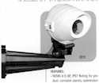

| system |
| home page |
|  |
| (CNN) Code of conduct for private data (The Scotsman) The principles of privacy (ZDNet-Australia) CTU To Take Up Workplace Privacy Issues (Scoop-New Zealand) I've got your chip under my skin (The Register-U. .com) Group to Study Privacy Impact of Posting New York Court Records Online (law. com) Proposed privacy laws won't stop junk mail (Gainsville Sun) Database of debt goes online (Stuff. com - New Zealand) Esther Dyson on Internet privacy (CNet) Internet companies object to proposed privacy law (Seattle Post-Intelligencer) Net firms object to Senate privacy bill (CNN) Online Privacy Bill Raising 'Grave' E-Commerce Concerns (internetnews. |
| . I think not wait until the crackers getyour credit card data, your answering machine flooded with telemarketercalls and then some. Traffic -Echelon II Software sniffs out delinquent taxpayers (Compliance 2000 in action, for abreif info blurb check toward the back of the 1994 federal registrty) A Bad Year for Privacy FTC cracking down on Net privacy issues Microsoft says Passport boosts privacy (Bull. Service DetailsSign-upSSL LoginNon-SSL LoginPrevious Members Consulting Cotse Small Business Security Services. Specializing in high quality, low cost, security solutions for small businesses. |